| SOURCE | TITLE| IMAGE MATCH | click to source page |
| Good afternoon, I hope "Y"ou are all having a lovely day. It's the letter "Y" in the a-z of Royalty on stamps. Here is my choice, please share "Y"ours too. Yugoslavia - | 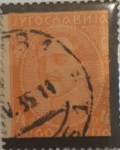 | |
| eBay | Signed Calves - Napoleon No.16 Orange Used PC 3610 Villefranche de Rouergue | eBay | 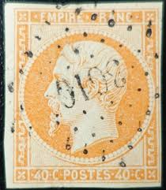 |
| eBay | FRANCE timbre NAPOLÉON N°23 ORANGE oblitéré AMBULANTS ML1° MARSEILLE à LYON | eBay | 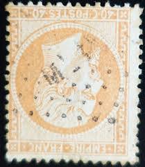 |
| eBay | Numeral Cancellation Israeli Stamps for sale | eBay | 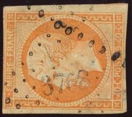 |
| USPhila.com | Costs of US Stamp Scott # 38 - 1860 30c Franklin | 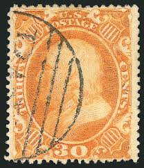 |
| USPhila.com | US Stamps Prices Scott Catalogue #38 - 30c 1860 Franklin | 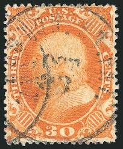 |
| Anchor cancelation, in use between 1857 and 1876 on french cruise ships to cancel mail coming from abroad or the colonies. : r/philately | 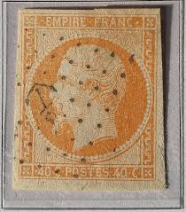 | |
| eBay | Signed Calves - Napoleon No.16a Bright Orange Used Diamond | eBay | 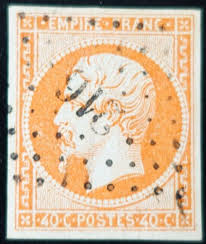 |
| SABO – University of Bolton | 1862 40c FRANCE STAMP NAPOLEON PERF WITH ANCHOR CANCEL | 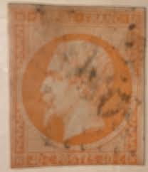 |
| eBay | Signed Calves - Ceres No.5 Used Roulette of Large Dots | eBay | 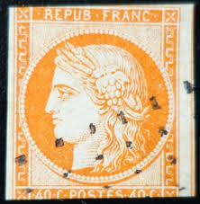 |
| nordfrim.com | Buy France 1853 - YT 16 - Cancelled | 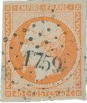 |
| Etsy | German Inflation Stamp; 1923; Orange / White; Mint, NH, OG - Etsy | 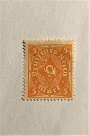 |
| eBay | 4 Retouché et Signé Calves on Cérès N°38d Light Orange Used Lozenge GC ??02 | eBay | 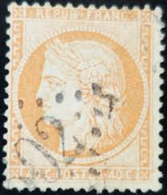 |
| Invaluable.com | Sold at Auction: U.S. STAMP #516 | 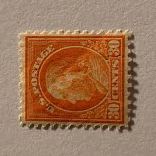 |
| Arpin Philately | Buy France #7 - Ceres (1849) 40¢ | Arpin Philately | 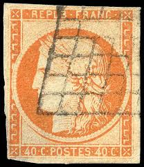 |
| ProBoards | Austria - Coarse print or fine print? | The Stamp Forum (TSF) | 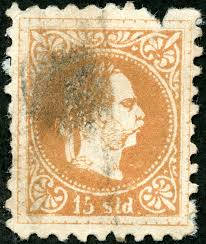 |
| eBay | US Revenue stamp R77c | eBay | 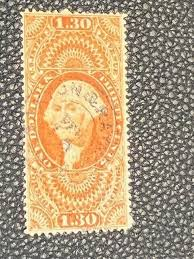 |
| eBay | France Stamp Napoleon N°16 Orange used Lozenge PC 2738 | eBay | 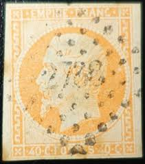 |
| Find Your Stamps Value | Value of king george iv stamps | 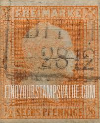 |
| BalkanPhila | 1874 French Levant 5100 TREBIZONDE Turkey – BalkanPhila | 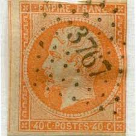 |
| Invaluable.com | Sold at Auction: EARLY GREECE STAMP | 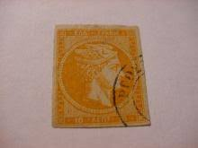 |
| eBay | 40c perf Ceres w/ numeral cxl 16, Aigueperse (Hautes-Pyrenees), clear str (a2146 | eBay | 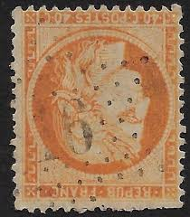 |
| Stamp Auction Network | Robert A. Siegel Auction Galleries, Inc. Sale - 1049 Page 131 | 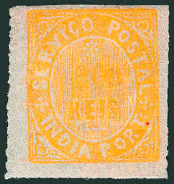 |
| eBay | Signed Calves - Napoleon N° 16b Orange S. Straw used PC 1818 Lyon | eBay | 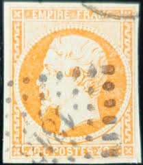 |
| Arpin Philately | Rare World Stamps for sale | Arpin Philately | 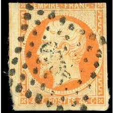 |
| eBay | France Stamp Napoleon No.16 Orange Used Roman Letters or Bars | eBay | 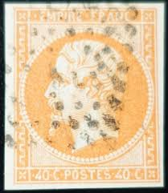 |
| Mercari | Lego Parts Lot: Hard-To-Find & Unique | Mercari | 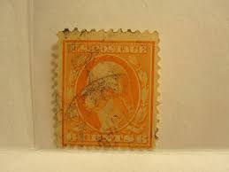 |
| eBay | 4 RETOUCHÉ et SIGNÉ CALVES sur CÉRÈS N°38d ORANGE CLAIR oblitéré LOSANGE GC ??02 | eBay | 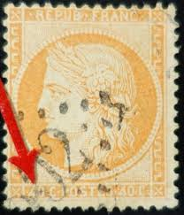 |
| barbadosstamps.co.uk | Barbados SG69 | Barbados Stamps | 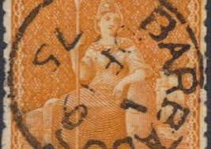 |
| eBay | FRANCE #18 NAPOLEON III SERIES VLH, 1853-1860 | eBay | 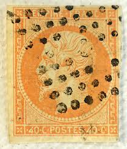 |
| postbeeld.com | Stamp 1871, French Colonies (gen. issues) 40c, used BASSE-TERRE (Guadeloupe), 1871 - Collecting Stamps - PostBeeld - Online Stamp Shop - Collecting | 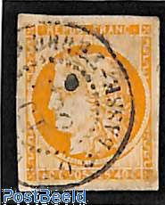 |
| eBay | APC 3828 Saxony sc# 15 16 16a scv over $165 used | eBay | 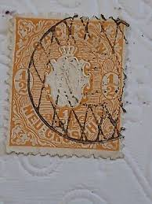 |
| eBay | France Stamp Napoleon No.16 Orange Used Diamond PC 4175 Hautmont | eBay | 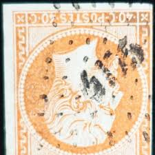 |
| austrianstamps.co.uk | Austrian Stamps - Newspaper Stamps | 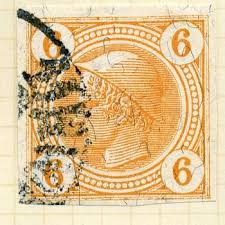 |
| eBay | KGV 1/2d Orange Australia G NSW Punctured Perfin Pair CASINO CDS 1938 | eBay | 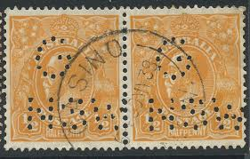 |
| eBay | SPAIN COLONIES, NON IDENTIFIED STAMP, W/WATERMARK | eBay | 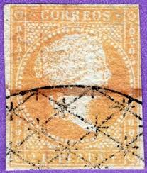 |
| PicClick | CLASSIC INDIA FEUDATORY States Lovely Lot Old Time Cinderellas & Reprints 1 $9.99 - PicClick | 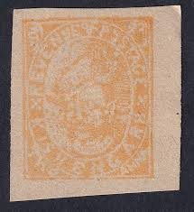 |
| Duzik Stamps | Italy - Duzik Stamps | 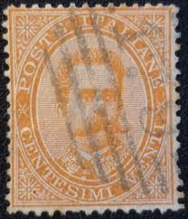 |
| eBay | 1867 **E.N. KELLOGG & CO.** HARTFORD, CT BANK CHECK+VIGNETTE+SCOTT# R15c STAMP! | eBay | 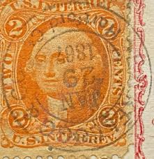 |
| eBay | sto128] THAILAND SIAM 1883 Scott#5 used 1sa orange Nice cds cancellation | eBay | 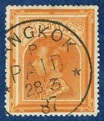 |
| eBay | Germany-Prussia 2 Used p2412.8223 | eBay | 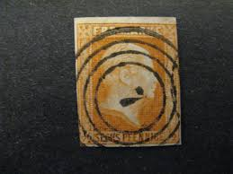 |
| Mysore The Mysore Princely State, established in 1799 after the fall of Tipu Sultan, became a prominent and prosperous princely state under British suzerainty, ruled by the Wodeyar dynasty. Known for its | 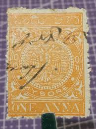 | |
| eBay | Greece #54 Used | eBay | 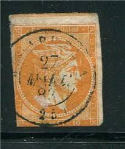 |
| Vintage stamps behind old post marks | 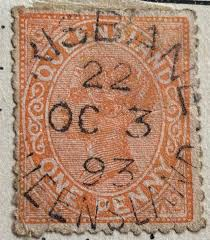 | |
| World Stamps Project | Philately of Czechoslovakia: Hradčany, 40h stamp – World Stamps Project | 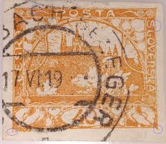 |
| lastdodo.com | Stamps from France - Colonies [general issues] Stamp catalogue - LastDodo | 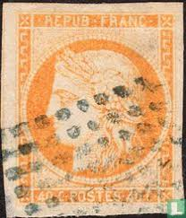 |
| Leski Auctions | Victoria: 1860-66 Beaded Ovals 6d orange SG 93, an unusually large, well centred & lightly | 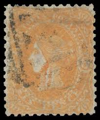 |
| DeqiStamps.com | Serbia postage stamps 2009 Famous People – Actors Theatre Cinema | 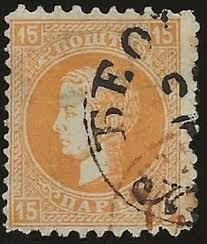 |
| eBay | Mercuorius, Austria Newspaper Stamp 1908 | eBay | 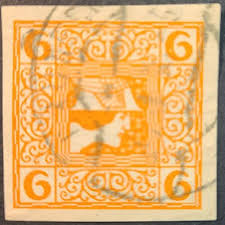 |
| eBay | Signed Brun - Stamp Type Cérès N°5 Used Grid Without End | eBay | 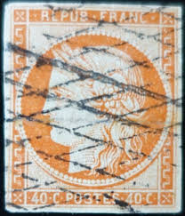 |
| eBay | c.1871 40c Orange CERES Guadeloupe FRANCE Francaise French Colony Imperf | eBay | |
| eBay | Travelstamps: 1930 Denmark Stamp Sg 258 - 10ø - 60th B'day King Christian X Used | eBay | |
| Classic Stamps | Classic Stamps |  |
| BalkanPhila | 1862 French Levant 40c Napoleon 5102 TULSCHA Romania – BalkanPhila | |
| eBay | FRANCE timbre NAPOLÉON N°31g ORANGE sur JAUNÂTRE oblitéré ÉTOILE de PARIS N°14 | eBay | |
| PICRYL | Siegelmarke H. Braunschweig-Lüneb. Oberhofmeister W0350491 - PICRYL - Public Domain Media Search Engine Public Domain Search | |
| eBay | Orange Portuguese & Colonies Stamps for sale | eBay | |
| Stamp Community Forum | Céres 40c Orange: France Nr. 5 Or Colonies Francaise Nr. 13? - Stamp Community Forum | |
| Todocolección | sl)mexico hidalgo 10c stamps used - Buy Antique stamps of Mexico on todocoleccion | |
| LOT-ART | Netherlands 1864 - King Willem III, second emission, 'Haarlemse druk' - NVPH 6B in Netherlands |